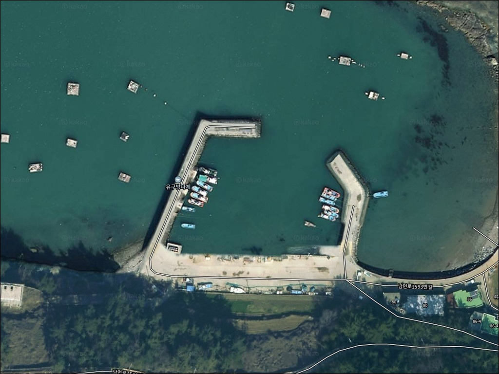
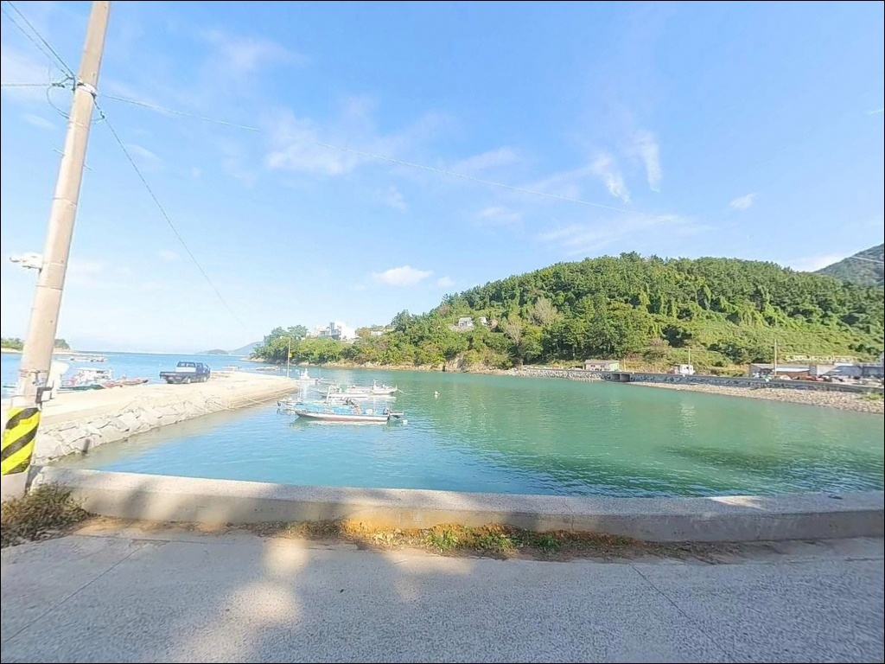
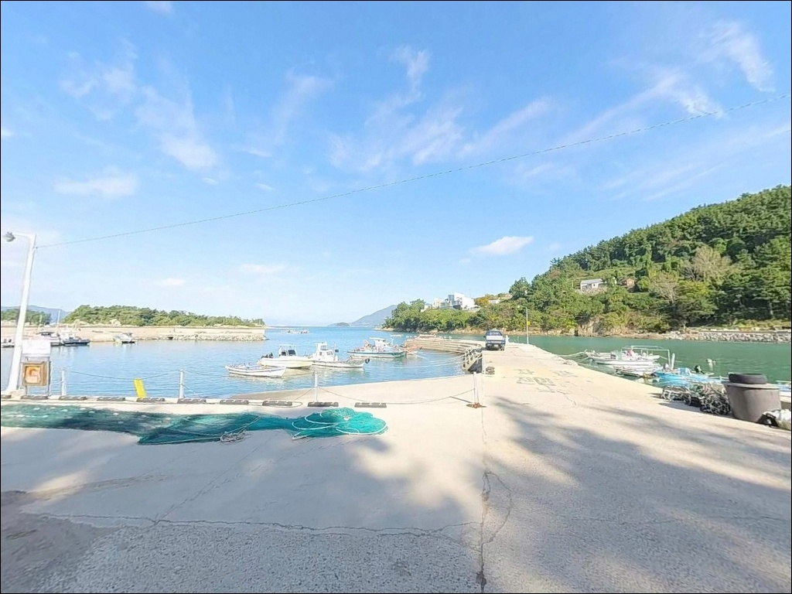
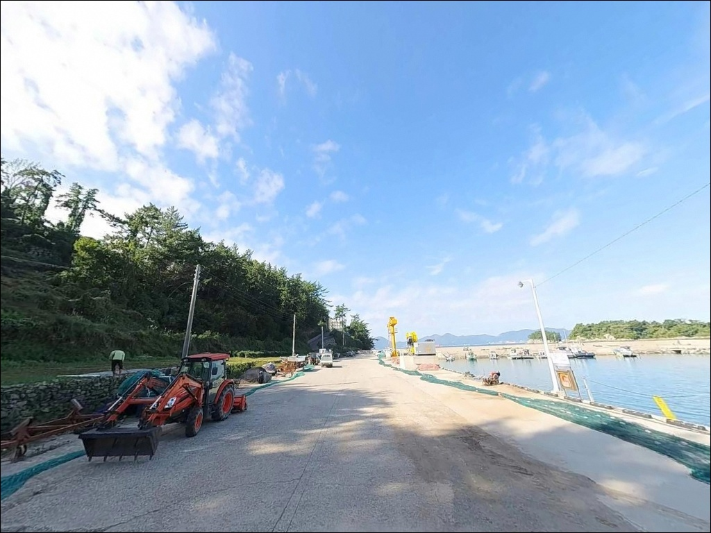
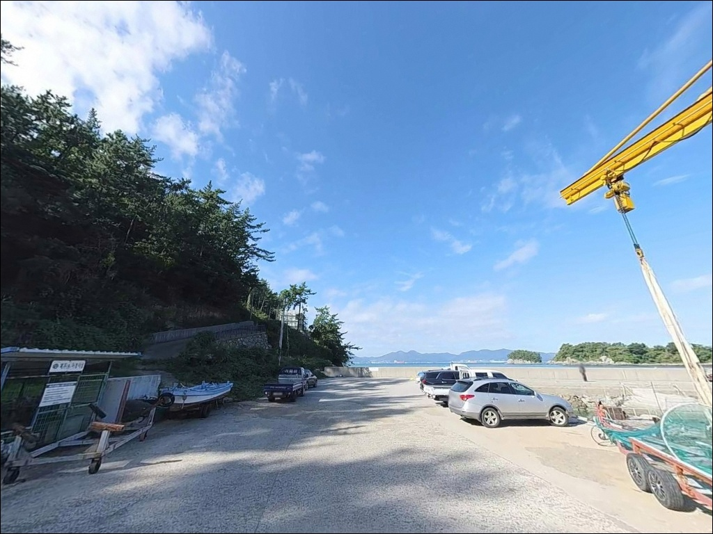
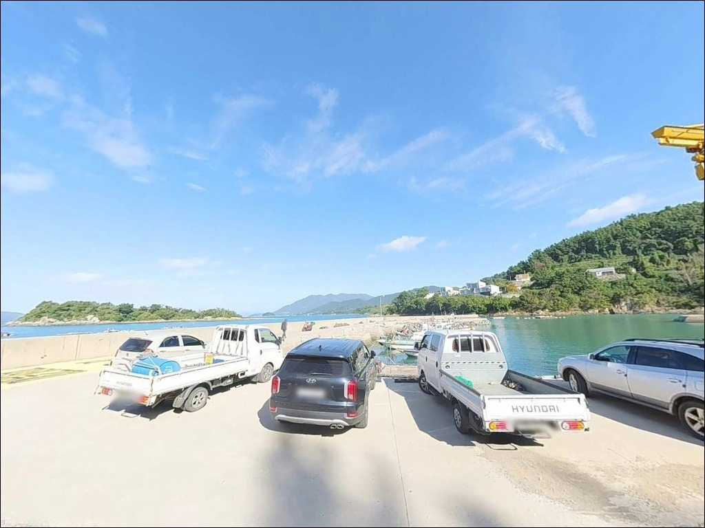
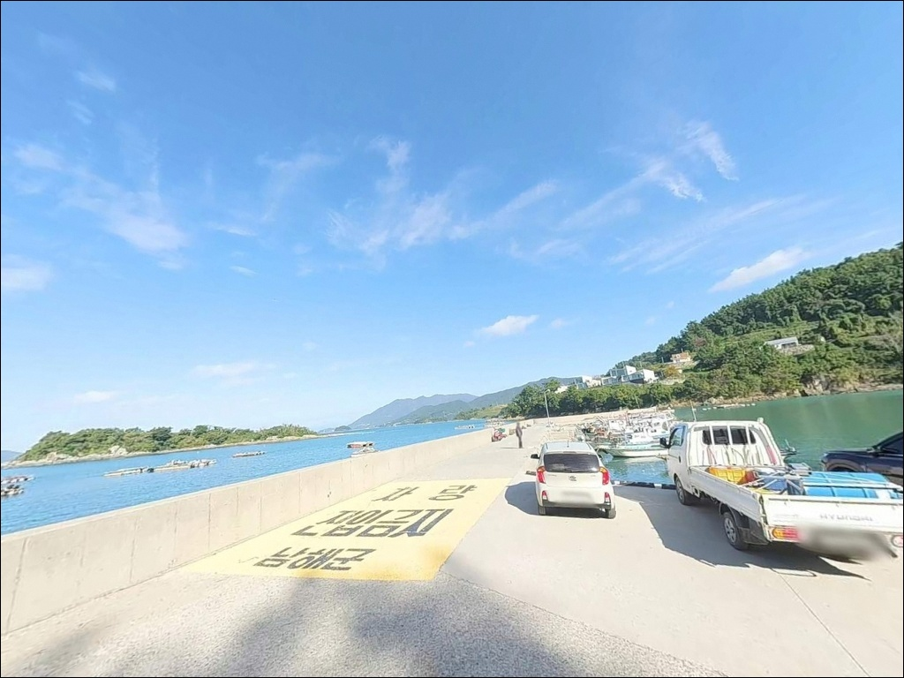
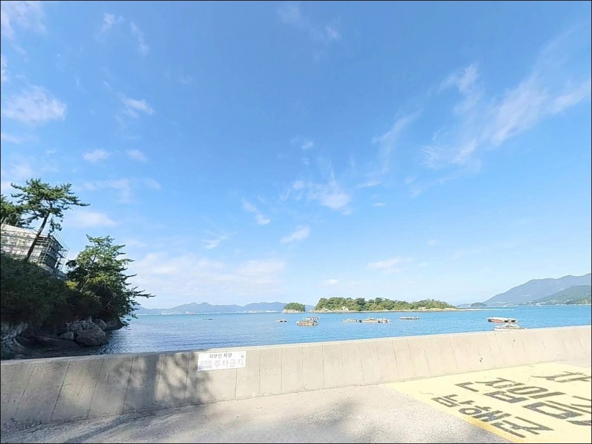
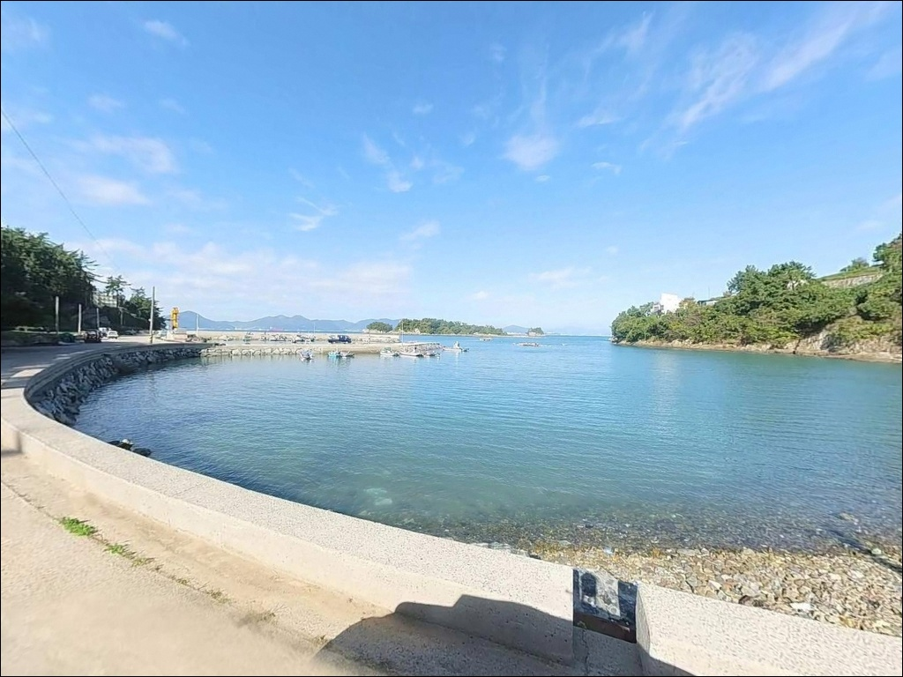

발치에 넣으면 밑걸리는 남해 유구방파제, 콧부리 원거리 투척으로 잡은 입질
이 페이지에는 광고(제휴 링크 포함)가 있으며, 광고 링크를 통해 구매하면 운영자가 판매 수익 또는 수수료를 받을 수 있습니다. 포인트 사진: 카카오맵 스카이뷰·로드뷰. 이 페이지의 지도·사진 이미지는 카카오맵의 실제 서비스 이미지와 다를 수 있습니다.


포인트 안내
유구방파제
경남 남해군 남면 평산리 2163-4
수심이 얕은 방파제에서 가장 많이 하는 실수는
방파제 가까운 곳에 채비를 넣는 것입니다.
유구방파제는 방파제 발치 쪽 바닥이
암반과 뻘이 섞인 구조라
밑걸림이 잦고 채비 손실이 빠른 편입니다.
콧부리(방파제 끝단) 쪽으로 이동하거나
멀리 투척하는 방식이 이 포인트의 기본 공략법입니다.
이 글은 유구방파제의 지형 구조,
진입 동선, 낚시 스타일별 공략 조건,
차박 체류 여건에 집중합니다.
조황 단정이나 특정 어종 보장은
이 글의 범위에 포함되지 않습니다.

1. 진입 동선과 차량 접근 여건
남해군 남면 평산리로 접근하는 기본 동선은
남서대로(국도 77호선)에서
유구마을 방향 진입로로 빠지는 방식입니다.
평산항 방면에서 해안도로를 따라
약 1.5km 이동하면 유구마을에 닿습니다.
도로 폭이 좁은 구간이 포함되어 있으며
반대편 차량과의 교행 시 서행이 필요합니다.
차량 유형 기준으로는
소형 캠핑카까지 무난하게 진입이 가능한 수준입니다.
대형 장비를 갖춘 차량이라면
출발 전 위성지도로 진입로를 확인해 두는 편이 좋습니다.
회차는 방파제 입구 일대에서 가능하며,
좁은 골목 안쪽까지 무리하게 진입하지 않는 것이
철수 시 혼선을 줄이는 방법입니다.
주차는 방파제 초입 물량장 주변이 기본 자리입니다.
차량을 방파제 바로 앞에 세우고
낚시 장비를 내릴 수 있는 구조여서
짐 이동 동선이 짧다는 점은 장점입니다.
다만 수용 대수가 많지 않으니
주말 방문이라면 이른 시간 도착을 권합니다.

2. 차박 환경과 야간 체류 여건
유구방파제는 소규모 어촌 마을에 붙어 있는 구조입니다.
민가와 약간 거리를 두고 있어
야간 차량 통행이 적고
프라이버시는 상대적으로 양호한 편입니다.
가로등이 설치되어 있어
완전한 암흑 환경은 아니며,
야간 낚시 시 발판 확인이 가능한 정도의
조명 여건이 갖춰져 있습니다.
외항이 여수만 방향으로 직접 열려 있어
남서풍이 강할 때는 파도 영향을 받는 구조입니다.
기상이 안정된 날 낚시를 마치고
조용히 하룻밤 머무는 용도로는
나쁘지 않은 환경이지만,
바람 방향과 파도 높이는 출발 전 반드시 확인해야 합니다.
차박 장박보다는 낚시 후 짧게 머무는
낚시형 차박에 어울리는 포인트입니다.


3. 주변 편의시설 및 인프라 현황
유구방파제 자체에는 화장실이 없습니다.
용무가 필요한 경우
차량으로 약 3분 거리의
평산항 공중화장실을 이용하는 방식이
현실적인 대안입니다.
편의점은 평산항 인근에 위치한
CU 남해평산점까지 약 1.7km 거리입니다.
24시간 운영하는 곳으로 알려져 있어
야간 출조 전 간단한 보급이 가능합니다.
식당은 평산항 일대에 횟집이 분포해 있으며,
평산항이 유구방파제의 주요 인프라 거점 역할을 합니다.
응급 상황 발생 시 남해군 보건의료원(남해읍)까지
거리가 상당하므로
비상 약품과 충분한 수분은
출발 전에 갖춰두는 것이 기본입니다.

4. 낚시 포인트 선정 전 반드시 확인해야 할 지형 요소
유구방파제는 방파제 발치와 가까운 구간에
암반과 뻘이 혼재한 바닥 구조입니다.
채비를 가깝게 넣으면 밑걸림이 잦기 때문에
먼 곳에 투척하거나 콧부리 쪽으로 자리를 이동하는
판단이 먼저입니다.
릴찌낚시로 접근할 때는
저부력찌(0~G2 수준)를 기준으로
수심 1~2m 층을 공략하는 방식이 이 지형에 맞습니다.
외항은 여수만으로 직접 노출된 구조입니다.
너울성 파도가 발생하는 날은
외항 끝단 접근을 삼가는 편이 안전하며,
기상청 해상 예보를 출조 당일 아침
다시 한번 확인하는 것이 포인트 낭비를 막는 조건입니다.
외항 테트라포트가 없는 석축 구조라
발판은 안정적이지만 파도 넘침 시 젖기 쉬운 구조입니다.
마을 어선 이동 동선과 어구 주변에는
접근하지 않는 것이 기본 매너입니다.
소규모 마을 방파제인 만큼
새벽 이른 시간 엔진 소음과 생활 소음은
인근 민가를 배려해야 합니다.

5. 지형 기반 낚시 여건 분석
유구방파제의 핵심은
방파제 끝단(콧부리) 구간입니다.
석축 방파제 구조로 발판이 편안하며,
끝단으로 갈수록 수심이 깊어지는 지형이
공략 지점을 자연스럽게 만들어 줍니다.
외항 쪽 평균 수심은 3m 내외이지만,
콧부리에서 투척 거리를 늘리면 5~6m까지 확보됩니다.
남해도 남면 해안은
여수만을 서쪽으로 바라보는 방향으로 형성된 해역입니다.
조류 소통이 이루어지는 반(半)개방 구조로
들물과 날물의 흐름이 살아 있는 시간대에
대상어의 진입이 활발해지는 편입니다.
사질과 뻘, 암반이 섞인 저질 구조는
어종 다양성을 갖춘 전형적인 남해형 방파제 지형입니다.
내항 쪽은 소형 어선 정박 구역으로
수심이 상대적으로 얕습니다.
원투낚시로 바닥층을 노릴 때는
내항 측면보다 외항 방향에서
멀리 던지는 방식이 유효하며,
찌낚시 자리는 콧부리 쪽이
조류 방향을 읽기에 유리합니다.
출조 전 최신 조황은
"유구방파제 낚시" 또는 "평산항 조황" 키워드로
직접 검색해 보시기 바랍니다.


6. 포인트에 어울리는 낚시 스타일
이 포인트에서 가장 잘 맞는 낚시는
릴찌낚시입니다.
외항 3m 내외의 수심에 저부력찌(0~G2)를 써서
1~2m 층을 공략하는 예민한 방식이
이 지형 조건과 일치합니다.
가을철 감성돔·벵에돔이 주 공략 대상이며,
조류 흐름이 살아 있는 들물·날물 타이밍을
기준으로 자리를 잡는 편이 효율적입니다.
야간 루어낚시도 이 포인트의 강점 중 하나입니다.
가로등이 설치된 방파제 구조는
집어 효과를 겸하는 환경을 만들어 줍니다.
가을부터 초겨울 사이에는
갑오징어와 호래기가 방파제 주변으로 붙는 편이며,
해질녘부터 야간 집중 공략이 이 시즌의 기본 방식입니다.
볼락과 갈치도 야간 루어 대상으로 기대해 볼 수 있습니다.
원투낚시는 외항 방향으로 멀리 던지는 방식으로 운용합니다.
방파제 가까운 곳은 밑걸림이 있는 편이므로
충분한 거리를 확보해야 합니다.
바닥층에서는 도다리류, 성대, 붕장어를
기대해 볼 수 있는 해역 조건이며,
정조 타이밍보다 조류가 움직이는 구간에
집중하는 방식이 이 포인트에 맞습니다.

7. 대안 포인트와 플랜 B 동선
유구방파제에서 조류 여건이 맞지 않거나
주차 공간이 여의치 않을 때
가장 먼저 이동할 대안은
평산항 방파제입니다.
약 1.5km 북쪽에 위치하며
유구방파제보다 규모가 크고
발판이 편한 편입니다.
낚시 전문점과 식당도 인근에 있어
보급과 정보 수집이 동시에 가능합니다.
사촌방파제는 유구방파제에서
서쪽 방향으로 약 2km 거리입니다.
같은 남면 해안선에 위치해
해역 조건이 동일하며,
사촌해수욕장과 연계된 구조로
편의시설 접근성이 유구방파제보다 나은 편입니다.
차박 거점을 바꾸고 싶은 경우에는
사촌해수욕장 주차 공간이 대안입니다.
포장된 주차 라인이 갖춰진 구조로
접근성은 높지만,
주말에는 혼잡한 편이므로
현지 안내판을 확인한 뒤 체류 여부를 판단하는 것이
맞습니다.

지형을 읽고 자리를 잡으면
유구방파제가 달라 보입니다
릴찌낚시나 야간 갑오징어·볼락 루어를
즐기는 낚시인에게 유구방파제는
규모는 작지만 지형 조건이 잘 맞는 포인트입니다.
석축 발판이 안정적이고 가로등이 갖춰져 있어
야간 입장에도 운용이 어렵지 않고,
평산항이 1.5km 거리에 있어
보급과 대안 이동 동선이 짧습니다.
반면 주차 공간이 넉넉하지 않고,
방파제 발치 쪽 밑걸림이 있어
자리 선택 없이 그냥 채비를 넣으면
손실이 빠를 수 있습니다.
콧부리 자리 확보, 조류 타이밍 확인, 원거리 투척,
이 세 가지를 갖추고 접근하면
충분히 기억에 남는 포인트가 될 수 있는 곳입니다.
편의시설 없는 조용한 어촌 마을에서
여수만 방향으로 자리를 잡고
하룻밤 낚시와 차박을 함께 즐기려는 분이라면,
기상 확인과 진입로 점검만 먼저 해두면
조용하고 여운 있는 출조가 될 수 있는 곳입니다.